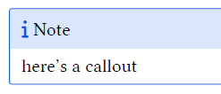
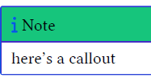
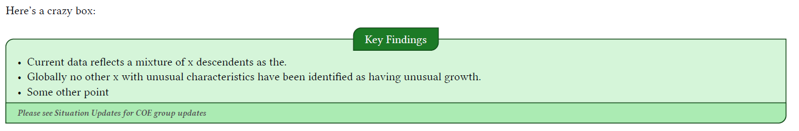

Override quarto callouts colors in typst
Go from this

To this, in typst

This is in reply to a question I saw on bluesky about how to change callout block colors in typst. It’s relatively easy in latex but can be confusing in Typst if you’ve never done it. I have an example file and output that I’ll walk through
How to
Typst in Quarto doesn’t work like latex. Instead of adding simple .tex partials to adjust minor things, you need to adjust .typ files.
- Start with the default Quarto typst template with
quarto create typstand it will give you- a
typst-show.typfile. I never edit this - a
typst-template.typfile - this is where the customization magic happens - make sure you read the comments in the first lines of those files!!!!!
- reference these files in your yaml front matter like so:
- a
---
format:
typst:
template-partials:
- typst-template.typ
- typst-show.typ
---- if you want custom callout colors, you can change them in the
typst-template.typ- it helps to see the raw .typ output to understand where you need to change the color in typst. put
keep_typ: truein your front matter:
- it helps to see the raw .typ output to understand where you need to change the color in typst. put
---
format:
typst:
template-partials:
- typst-template.typ
- typst-show.typ
keep-typ: true
---now render your document and look through the output
.typfile for the callout block functionwhen you find the callout block function, copy it and put it in your typst-template. you might need a basic understanding of Typst in order to see where to place the function. Put the function before the
#let articlefunction. it will look like this:
#let callout(body: [], title: "Callout", background_color: rgb("#dddddd"), icon: none, icon_color: rgb("#9cbe5b")) = {
block(
breakable: false,
fill: rgb("#a6c72e"), // I changed the color here
stroke: (paint: icon_color, thickness: 0.5pt, cap: "round"),
width: 100%,
radius: 2pt,
block(
inset: 1pt,
width: 100%,
below: 0pt,
block(
fill: rgb("#c03c14"),
width: 100%,
inset: 8pt)[#text(icon_color, weight: 900)[#icon] #title]) +
if(body != []){
block(
inset: 1pt,
width: 100%,
block(fill: white, width: 100%, inset: 8pt, body))
}
)
}- Now you can change the fill colors and icon colors to whatever you want by adjusting them in that function.
From here you can just render the qmd file and it should change the colors.
Changing typst within the qmd
You can also write Typst code inside of the qmd file.
If you have some text that you want to decorate, you can surround the text in code like this
```{=typst}
#parameters-here()[ code here
```
regular markdown text here
```{=typst}
] //end function bracket here
```Here I’m importing a custom typst library, tweaking some parameters, and wrapping it around regular markdown text:
```{=typst}
#import "@preview/showybox:2.0.1": showybox
// Second showybox
#showybox(
title-style: (
boxed-style: (
anchor: (
x: center,
y: horizon
),
radius: (top-left: 10pt, bottom-right: 10pt, rest: 0pt),
)
),
frame: (
title-color: green.darken(40%),
body-color: green.lighten(80%),
footer-color: green.lighten(60%),
border-color: green.darken(60%),
radius: (top-left: 10pt, bottom-right: 10pt, rest: 0pt)
),
title: "Key Findings",
footer: text(size: 10pt, weight: 600, emph("Please see Situation Updates for COE group updates"))
)[
```
:::{.content-visible when-format="html"}
# Key Findings
:::
- Current data reflects a mixture of x descendents as the.\
- Globally no other x with unusual characteristics have been identified as having unusual growth.
- Some other point
```{=typst}
]
```and it gives this as a result:
